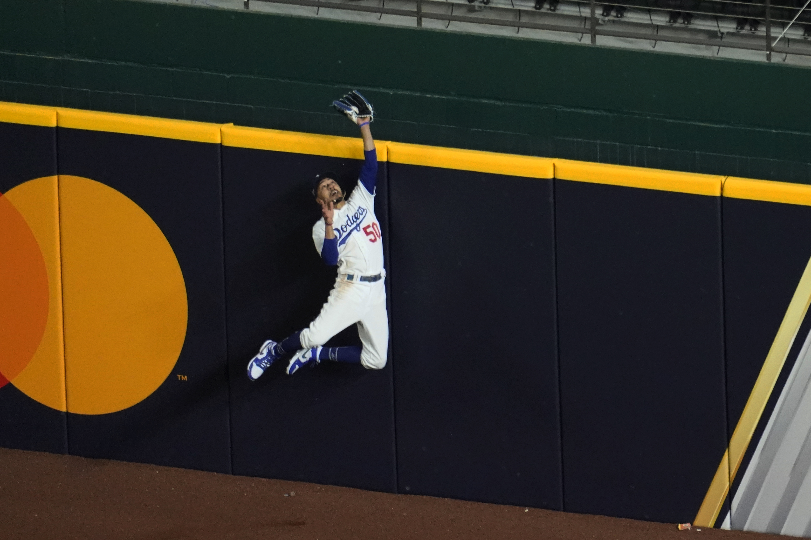

Resources
Articles
Impact of COVID on 2020 MLB Season
Impact on Players
Impact on Fans
Impact on Financials
Impact on Rules
Impact on Postseason

Below is a list of sources we used to create this website.
Source of Impact on Players
Source of Impact on Players cont.
Source of Impact on Fans
Source of Impact on Financials
Source of Impact on Financials cont.
Source of Impact of Rules
Source of Impact of Rules cont.
Source of Impact on Postseason